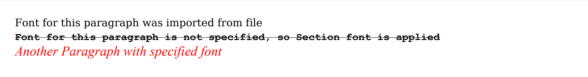

Configuring Font
Brief
The article describes how to configure fonts.
Details
You can configure the font for document sections, paragraphs, a table of content, and text elements.
The font can be also configured for the content of an entire table, table columns, table rows (content, alternate, header, footer), and table cells.
The following standard fonts are pre-installed in the library: Times, Helvetica, Courier, StratumNo2.
In addition to these fonts, you can export external fonts from TFF files.
Fonts can be created and configured using methods of the FontBuilder class.
The methods for configuring the font settings for particular elements are also available in the corresponding element's builders
ParagraphBuilder, OutlineBuilder,
FormattedTextElementBuilder, TableColumnBuilder,
TableRowBuilder, and TableCellBuilder.
You can find examples of configuring the font for particular elements using methods of their builders in the corresponding articles.
Each font has the following settings:
Parameter |
Default value |
Methods for configuration (available in FontBuilder
and in the corresponding element's builders) |
Name |
Helvetica
|
FontBuilder.SetName, SetFontName
|
Size |
14f
|
FontBuilder.SetSize, SetFontSize
|
Color |
Black
|
FontBuilder.SetColor, SetFontColor
|
Bold |
False
|
SetBold
|
Italic * |
False
|
SetItalic
|
Oblique * |
False
|
SetOblique
|
Underline |
False
|
SetUnderline
|
Strikethrough |
False
|
SetStrikethrough
|
* Most fonts include either italic or oblique style. If you set the oblique or italic style for a font that doesn't include this style, the font will be regular.
Using Pre-Installed Fonts
To use a pre-installed font, do one of the following:
Call the method FontBuilder.SetName to specify the font name
and then call the method FontBuilder.SetSize to specify the font size.
For example,
var font = FontBuilder.New();
font.SetName("Times").SetSize(12);
Call the method FontBuilder.With to specify the font name and font size at once.
For example,
title=
font.With("Times", 12);
Call the method FontBuilder.With specifying the font name with the help of
the FontNames class.
For example,
font.With(FontNames.Times, 12);
To quickly apply a standard font, you can use the Fonts class to choose the font and specify its size.
For example,
Fonts.Helvetica(12)
Using External Fonts
To use an external font from a TTF file in your document, do one of the following:
Specify the path to the font file in the FontBuilder.SetPath method.
For example,
font.SetPath(Path.Combine("Fonts", "DejaVuSerif.ttf"))
Specify the path to the folder with font files and the necessary font size in the FontBuilder.FromFile method,
and then configure other font settings.
For example,
var dejaVuFontDir = Path.Combine("fonts", "DejaVu");
var font = FontBuilder.New().FromFile(dejaVuFontDir, 14f).SetBold();
If the font file requires a particular encoding, specify it using the method FontBuilder.SetEncodingName.
Configuring Fonts Using Styles
Configuring the font with the help of styles allows you to define the font for an entire document or for its elements of a particular type.
For example:
var styleDocument = StyleBuilder.New()
.SetFont(Fonts.Times(12));
var styleHeader = StyleBuilder.New(styleDocument)
.SetFontBold();
// Apply a style to the entire document
DocumentBuilder.New().ApplyStyle(styleDocument)
.....
// Apply a style to the paragraph:
.AddParagraph("Header").ApplyStyle(styleHeader)
Note that you can configure the font settings of a section using the method SectionBuilder.SetStyleFont, and they
will be written to the section style. Similar methods are available for different types of table rows in the TableBuilder class.
For details about working with styles, see the article Formatting and Styles.
See also
Adding Section
Adding Paragraph
Adding Content to Paragraph
Adding Table
Formatting and Styles
Examples
Example 1. Use a pre-installed font
//Create a font:
var font = Fonts.Times(12)
.SetColor(Color.Blue)
.SetBold()
.SetItalic()
.SetUnderline(Stroke.Double, Color.Red);
//Create document:
DocumentBuilder.New()
.AddSection()
.AddParagraph("Text of blue font times 12 bold italic with red double underline.")
.SetFont(font)
.ToDocument().Build("Result.pdf");
The above code will generate the following:
 See the document
See the document
Example 2. Use a pre-installed font
DocumentBuilder.New()
.AddSection()
.AddParagraph("Typewriter old font text.")
.SetFont(FontBuilder.New()
.With(FontNames.Courier, 11)
.SetColor(Color.Gray)
.SetBold()
.SetUnderline(Stroke.Solid))
.ToDocument().Build("Result.pdf");
The above code will generate the following:
 See the document
See the document
Example 3. Use an external font
//Create a font:
var font = FontBuilder.New().FromFile("Font", 16).SetBold();
//Create a document:
DocumentBuilder.New()
.AddSection()
.AddParagraph("User font for paragraph text.")
.SetFont(font)
.ToDocument().Build("Result.pdf");
The above code will generate the following:
 See the document
See the document
Example 4. Use an external font
//Create a font:
var path = Path.Combine("Font", "DejaVuSerif-BoldItalic.ttf");
var font = FontBuilder.New().FromFile(path, 16).SetBold();
//Create document:
DocumentBuilder.New()
.AddSection()
.AddParagraph("User font TTF file for paragraph text.")
.SetFont(font)
.ToDocument().Build("Result.pdf");
The above code will generate the following:
 See the document
See the document
Example 5. Use different fonts in paragraphs: external, default, and pre-installed [show]
Example 5. Use different fonts in paragraphs: external, default, and pre-installed [hide]
//Create a font:
var fontCourier = FontBuilder.New()
.SetName("Courier")
.SetBold()
.SetStrikethrough(Stroke.Solid)
.SetStrikethroughColor(Color.Black);
//Create a document:
DocumentBuilder.New()
.AddSection()
.SetStyleFont(fontCourier)
.AddParagraph()
.SetFont(FontBuilder.New().FromFile("dejaVuFontDir", 14f))
.AddText("Font for this paragraph was imported from file")
.ToSection().AddParagraph()
.AddText("Font for this paragraph is not specified, so Section font is applied")
.ToSection().AddParagraph()
.SetFont(Fonts.Times(18).SetColor(Color.Red).SetItalic())
.AddText("Another Paragraph with specified font")
.ToDocument().Build("Result.pdf");
The above code will generate the following:

See the document
Example 6. Apply styles with different font settings [show]
Example 6. Apply styles with different font settings [hide]
//Create styles:
var styleDocument = StyleBuilder.New()
.SetFont(Fonts.Times(12))
.SetFontColor(Color.Blue);
var styleHeader = StyleBuilder.New(styleDocument)
.SetFontBold()
.SetFontItalic();
//Create a document:
DocumentBuilder.New().ApplyStyle(styleDocument)
.AddSection()
.AddParagraph("Header").ApplyStyle(styleHeader)
.ToDocument().Build("Result.pdf");
The above code will generate the following:
See the document
back